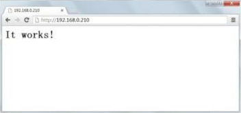

Linux Apache安装过程详解（LAMP环境搭建）
另外，Apache 就是 LAMP 环境中的“A”。前面做了这么多准备工作，就是为了正确安装 Apache+MySQL+PHP，现在可以安装 Apache 了。安装步骤如下。
1) 复制 apr 和 apr-util 库
这里是 Apache 2.4 自己的 Bug，我们必须手工复制 apr、apr-util 和 pcre 这三个库，才可以正确安装 Apache 2.4。
cp -r /usr/local/src/apr-1.4.6 /usr/local/src/httpd-2.4.7/srclib/apr
cp -r /usr/local/src/apr-util-1.4.1 /usr/local/src/httpd-2.4.7/srclib/apr-util
#这两个包先要解压缩，然后改名复制到指定位置
2) 安装 pcre 源码包
pcre 是一个用 C 语言编写的正则表达式函数库，Apache 和 PHP 默认使用的就是 pcre 正则表达式规则。
[root@localhost gd-2.0.35]# cd /usr/local/src/pcre-8.34
#进入解压缩目录
[root@localhost pcre-8.34]#./configure
#编译前配置
[root@localhost pcre-8.34]# make
#编译
[root@localhost pcre-8.34]# make install
#编译安装
3) 进入 Apache 解压缩目录
[root@localhost pcre-8.34]# cd /usr/local/src/ httpd-2.4.7
4) 编译前配置
[root@localhost httpd-2.4.7]# ./configure \ #编译前配置
--prefix=/usr/local/apache2/ \ #指定Apache安装目录
--sysconfdir=/usr/local/apache2/etc/ \ #指定Apache配置文件保存目录
--with-included-apr \ #使用捆绑APR/APR-Util 的副本
--enable-so \ #以动态共享对象(DSO)方式编译
--enable-deflate=shared \ #启用编小传输编玛支持的模块
--enable-expires=shared \ #根据用户的特别设定来生成失效和隐藏控制的HTTP头信息
--enable-rewrite-shared #启动重写功能的模块
如果采用动态的方式编译，则并没有直接把模块放入 Apache，而是把模块的所在位置放入了 Apache。如果 Apache 需要调用模块，则需要到指定位置自己查找，性能比静态方式稍差。但是如果需要加载新的模块，则不用重新安装 Apache，可以动态地加载新模块。更常用的编译方式是动态方式编译，所以在安装过程中我们采用动态方式编译。
5) 编译和编译安装
[root@localhost httpd-2.4.7]# make
[root@localhost httpd-2.4.7]# make install
6) 启动Apache，并进行测试
[root@localhost httpd-2.4.7]# /usr/local/apache2/bin/apachectl start
#启动Apache
[root@localhost httpd-2.4.7]# netstat -tlun | grep 80
tcp 0 0::80 ::* LISTEN
#80端口已经启动，说明Apache已经启动了

图 1 Apache测试页
如果看到了“It works！”，则说明 Apache 服务器正常工作了。
7) 设置 Apache 开机自启动
我们需要保证 Apache 每次开机都能正常启动，所以还要设置自启动，命令如下：
[root@localhost httpd-2.4.7]# vi /etc/rc.local/usr/local/apache2/bin/apachectl start
#在rc.local文件中加入Apache启动命令
关注公众号「站长严长生」，在手机上阅读所有教程，随时随地都能学习。内含一款搜索神器，免费下载全网书籍和视频。

微信扫码关注公众号